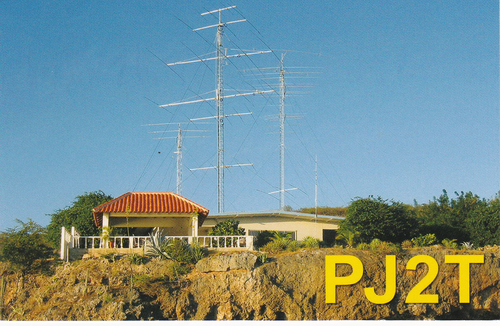
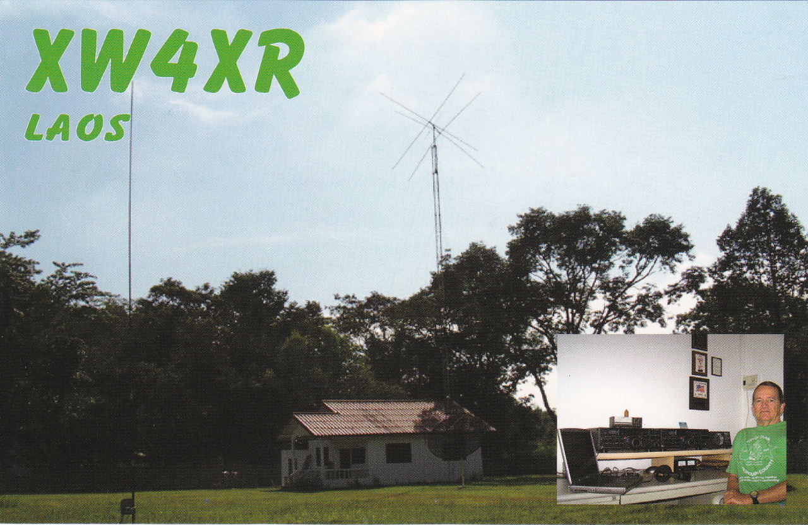
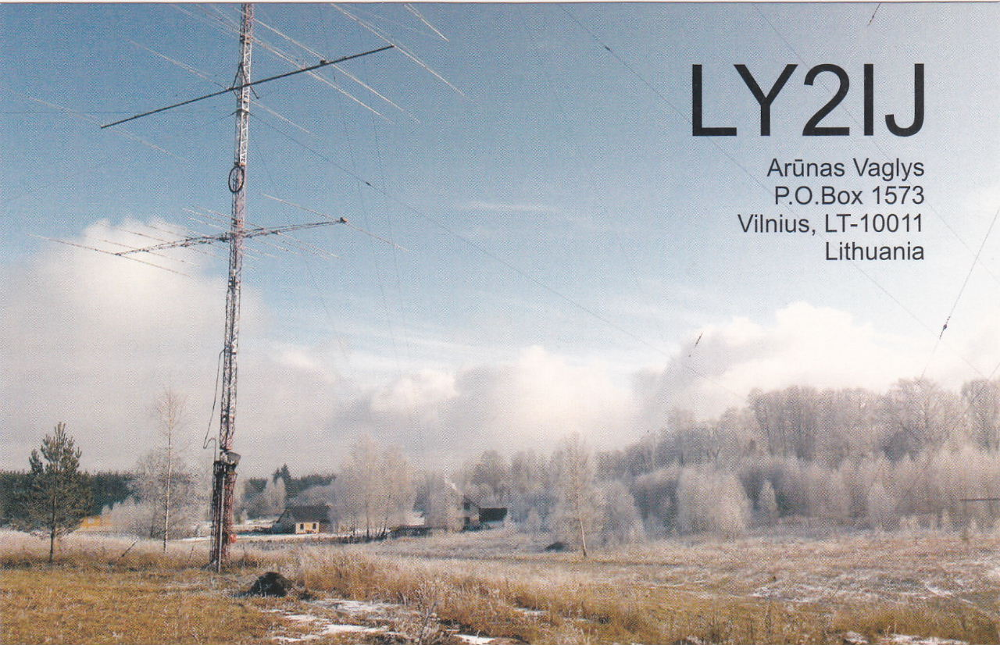

Flash ! DX


|
|
|
|
|
|
|
[Back Issuest Mar.2019]
TIME:UTC(JST-09:00)
Report from JA1RJU(PM95sq)
31.Mar.2019(15:00b)
Report from JA1RJU(PM95sq)
30.Mar.2019(15:00b)
Report from JA1RJU(PM95sq)
29.Mar.2019(15:00b)
Report from JA1RJU(PM95sq)
28.Mar.2019(15:00b)
Report from JA1RJU(PM95sq)
27.Mar.2019(15:00b)
Report from JA1RJU(PM95sq)
26.Mar.2019(15:00b)
Report from JA1RJU(PM95sq)
25.Mar.2019(15:00b)
Report from JA1RJU(PM95sq)
24.Mar.2019(15:00b)
Report from JA1RJU(PM95sq)
23.Mar.2019(15:00b)
Report from JA1RJU(PM95sq)
22.Mar.2019(15:00b)
Report from JA1RJU(PM95sq)
21.Mar.2019(15:00c)
-----------------------------------------------------------------
◎"春分の日"の休日だった今日は、全国的に気温が上昇、関東地方を始め、
各地は南からの強風で"春の嵐"が吹き荒れた。この南風は日本海から北
海道に抜けた低気圧の影響で西日本(中国地方から奄美地方)では"春一番"
を記録した。
この気温の上昇で、各地で"桜の開花"が宣言され、関東でも例年より5日
早い開花宣言があった。
-----------------------------------------------------------------
◎ 南太平洋のNiue Islandから(5B4ALX＝Cyprus ARS)によるE6ETがQRVを
始めた。6mは50.300MHzのFT8で、4月2日までの運用が予定されている。
-----------------------------------------------------------------
Report from JA1RJU(PM95sq)
20.Mar.2019(15:00b)
Report from JA1RJU(PM95sq)
19.Mar.2019(15:00c)
-----------------------------------------------------------------
PJ2T 07:56 50.193 JT65a -28dB EME CQ into JG2BRI
PJ2T 07:56 50.193 JT65a -30dB EME CQ into JA7QVI
VK3DUT 08:15 50.193 JT65a -22dB EME into JA7QVI
VK4MA 08:19 50.193 JT65a -24dB EME into JG2BRI
PJ2T 08:28 50.193 JT65a -27dB EME CQ into JG2BRI
PJ2T 08:30 50.193 JT65a -26dB EME CQ into JG2BRI
WP4G 08:54 50.191 JT65a -27dB EME CQ into JG2BRI
WP4G 08:54 50.191 JT65a -23dB EME CQ into JA7QVI
(PJ2T 09:07 50.193 JT65a -27dB EME QSO with NJ6P)
(PJ2T 09:22 50.193 JT65a Moonset now QRT)
↓
-----------------------------------------------------------------
Report from JA1RJU(PM95sq)
18.Mar.2019(15:00b)
Report from JA1RJU(PM95sq)
17.Mar.2019(19:00d)
-----------------------------------------------------------------
PJ2T 06:12 50.193 JT65a -27dB EME into JG2BRI(RPT from DXSCAPE)
EA8DBM 18:09 50.190 JT65a -26dB EME CQ into ↓
-----------------------------------------------------------------
◎関東地方の桜の開花も今週中と予想されていよいよ"春近し"を感じる今日
この頃。今日はモータースポーツの春を告げるF1-GPの初戦がオーストラ
リアのメルボルンで開催された。春のTEPによる6mのVK/ZLの入感は、残念
ながら未だリポートは無いが、Esのマルチホップ前の伝搬に期待したい。
-----------------------------------------------------------------

Report from JA1RJU(PM95sq)
16.Mar.2019(15:00b)
-----------------------------------------------------------------
PJ2T 06:32 50.195 JT65a -29dB EME into JG2BRI(RPT from DXSCAPE)
S59A 14:38 50.189 JT65a -26dB EME CQ into ↓
-----------------------------------------------------------------
Report from JA1RJU(PM95sq)
15.Mar.2019(15:00b)
Report from JA1RJU(PM95sq)
14.Mar.2019(15:00b)
Report from JA1RJU(PM95sq)
13.Mar.2019(15:00b)
Report from JA1RJU(PM95sq)
12.Mar.2019(15:00b)
Report from JA1RJU(PM95sq)
11.Mar.2019(15:00c)
-----------------------------------------------------------------
◎昨日の深夜から今日の早朝にかけて、関東各地は急速に発達した低気圧の
影響で台風並みの強風が吹き荒れた。東京都心でも20m、太平洋沿岸部で
は30mを超える強風を記録した。低気圧は午後には発達しながら東北、北
海道に掛けて北上、北日本の太平洋沿岸は暴風雨となっている。
関東地方は午前中に"台風一過"並に快晴となり日中には約17.8度と4月中
旬並みの気温まで上昇した。
-----------------------------------------------------------------
Report from JA1RJU(PM95sq)
10.Mar.2019(15:00b)
Report from JA1RJU(PM95sq)
09.Mar.2019(15:00c)
-----------------------------------------------------------------
◎ 関東地方に例年よりも8日遅れの"春一番"の強風が観測された。
-----------------------------------------------------------------
Report from JA1RJU(PM95sq)
08.Mar.2019(15:00b)
Report from JA1RJU(PM95sq)
07.Mar.2019(15:00b)
Report from JA1RJU(PM95sq)
06.Mar.2019(15:00b)
Report from JA1RJU(PM95sq)
05.Mar.2019(15:00b)
Report from JA1RJU(PM95sq)
04.Mar.2019(15:00b)
Report from JA1RJU(PM95sq)
03.Mar.2019(15:00b)
Report from JA1RJU(PM95sq)
02.Mar.2019(15:00b)
Report from JA1RJU(PM95sq)
01.Mar.2019(15:00b)

<